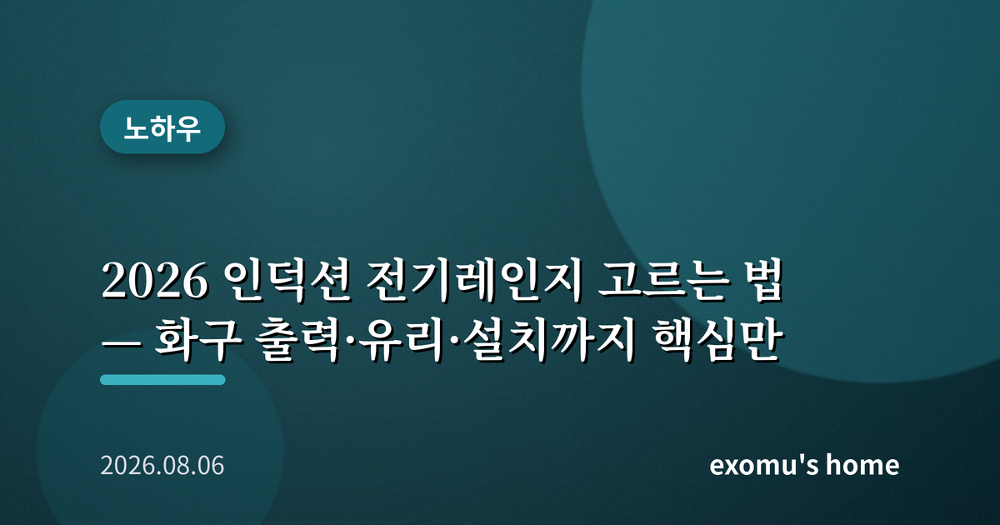
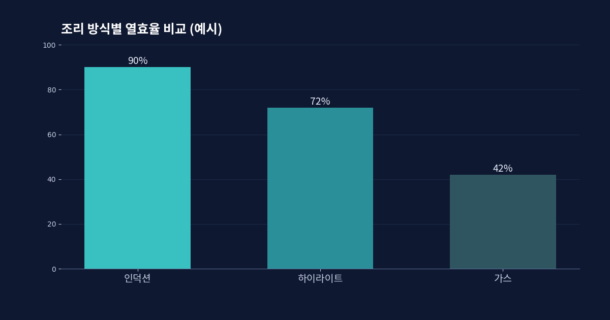
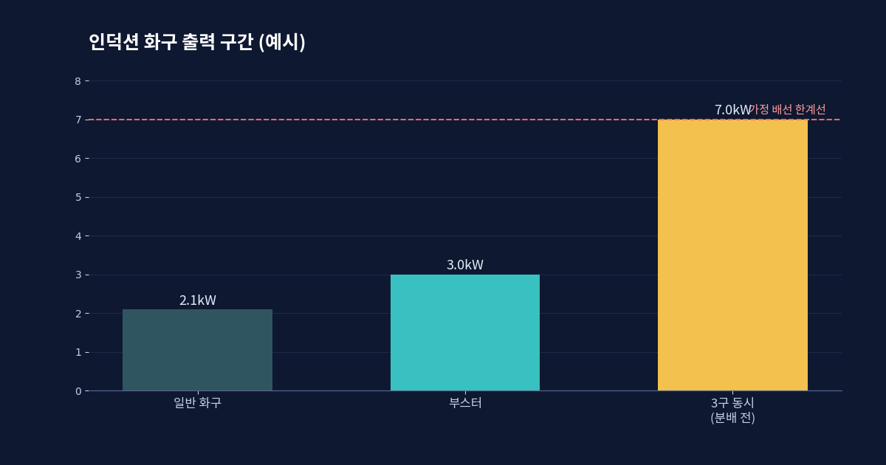
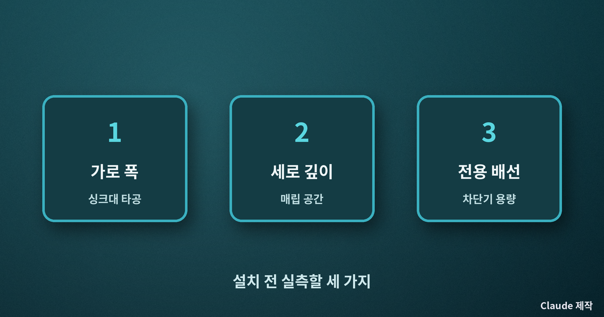
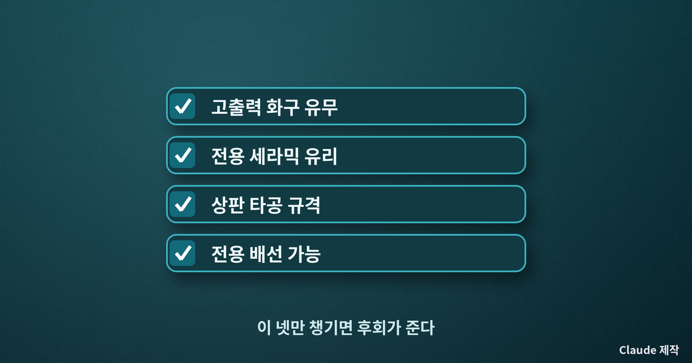

2026 인덕션 전기레인지 고르는 법 — 화구 출력·유리·설치까지 핵심만

인덕션·하이라이트·가스, 무엇이 다른가
주방 화구를 새로 들일 때 가장 먼저 갈리는 갈림길은 방식이다. 크게 셋으로 나뉜다. 인덕션은 자기장으로 냄비 자체를 직접 가열한다. 불꽃도 열선도 없이 냄비만 뜨거워지므로 열효율이 가장 높고, 주변 공기가 덜 데워져 여름철 조리 환경이 쾌적하다. 하이라이트는 유리판 아래의 전기 열선이 달아올라 그 열로 냄비를 데운다. 냄비를 가리지 않지만 열효율은 인덕션보다 낮고 상판이 오래 뜨겁다. 가스는 익숙하고 화력 조절이 직관적이지만, 실내 공기질과 화재·가스 안전 면에서 부담이 있다.
최근 몇 년 사이 신축과 리모델링에서 인덕션 채택이 눈에 띄게 늘었다. 열효율과 청소 편의, 실내 공기질 때문이다. 다만 인덕션은 바닥에 철분이 있는 전용 용기라야 작동한다는 제약이 있다. 쓰던 냄비 중 자석이 바닥에 붙는 것만 그대로 쓸 수 있다는 점을 사기 전에 반드시 확인해야 한다.

화구 출력과 부스터를 본다
인덕션의 체감 성능을 좌우하는 첫 번째 숫자는 화구 하나당 출력이다. 보통 한 화구가 1.8~2.3kW 수준이고, 물을 빨리 끓이거나 센 불로 볶을 때 잠깐 출력을 끌어올리는 부스터 기능이 있으면 3kW 안팎까지 올라간다. 라면 하나 끓이는 정도라면 큰 차이를 못 느끼지만, 큰 냄비로 국물을 자주 내거나 센 불 볶음을 즐긴다면 고출력 화구가 하나라도 있는 모델이 만족스럽다.
주의할 점은 전체 정격 출력이다. 화구 세 개를 동시에 최대로 켜면 순간 소비전력이 7kW를 넘길 수 있어, 가정용 단상 배선과 차단기 용량을 초과할 수 있다. 그래서 대부분의 인덕션은 여러 화구의 출력을 자동으로 나눠 쓰는 전력 분배 방식을 쓴다. 화구를 늘 동시에 풀가동하는 집이라면, 전용 배선 공사가 가능한지 설치 전에 확인하는 편이 좋다.

화구 수·상판 크기·유리를 본다
1~2인 가구라면 화구 두 개로도 충분하지만, 국·밥·반찬을 동시에 올리는 살림이라면 세 개 이상이 편하다. 상판 유리는 대부분 독일계 세라믹 글라스를 쓰는데, 브랜드 각인이 있는 정품 유리를 쓰는지 확인하면 내열·내충격 신뢰도를 가늠할 수 있다. 상판이 넓을수록 큰 냄비 두 개를 나란히 놓기 편하지만, 싱크대 상판 타공 규격과 맞아야 하므로 가로·세로·매립 깊이를 실측한 뒤 골라야 한다.
청소 편의도 무시할 수 없다. 인덕션은 상판이 평평해 조리 후 젖은 행주로 닦으면 대부분 지워진다. 다만 국물이 끓어 넘쳐 눌어붙으면 전용 스크래퍼가 필요하다. 터치 방식 조작부는 물기나 기름에 오작동할 수 있으니, 물 넘침 감지나 잠금 기능이 있는지도 살펴볼 만하다. 또한 인덕션은 작동 중 냄비 바닥과 공진하며 미세한 소음이나 냉각팬 소리가 날 수 있으므로, 조용한 주방을 원한다면 매장에서 실제 작동음을 들어 보는 것이 좋다.

전기세와 안전, 그리고 정리
전기세를 걱정하는 경우가 많은데, 인덕션은 열효율이 높아 같은 요리를 할 때 실제 소비 에너지는 생각보다 크지 않다. 하루 한 시간가량 쓰는 4인 가구 기준으로 월 전기 사용량 증가분은 밥솥·전자레인지 같은 다른 주방가전과 비슷한 수준이다. 오히려 여름철에는 불꽃이 없어 주방 온도를 덜 올리므로 냉방 부담을 줄이는 부수 효과도 있다. 다만 겨울철 정전이 잦은 지역이라면 전기에만 의존하는 조리 방식이 부담이 될 수 있으니, 휴대용 가스버너 하나를 비상용으로 두는 것도 방법이다.

정리하면 이렇다. 실내 공기질과 청소·안전을 우선한다면 인덕션, 쓰던 냄비를 그대로 쓰고 싶고 초기 비용을 아끼려면 하이라이트, 강한 직화와 조작 직관성을 포기할 수 없다면 가스가 맞다. 인덕션을 고른다면 고출력 화구 유무, 전용 유리, 상판 타공 규격, 전용 배선 가능 여부 이 네 가지만 체크리스트로 들고 매장에 가면 후회를 크게 줄일 수 있다. 화려한 부가 기능보다, 내 조리 습관과 주방 배선에 맞는 기본기가 오래 쓰는 제품의 조건이다.